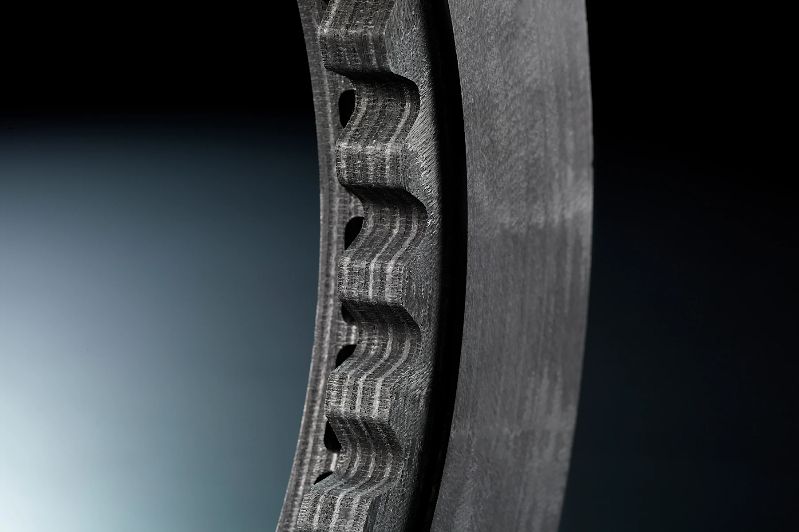
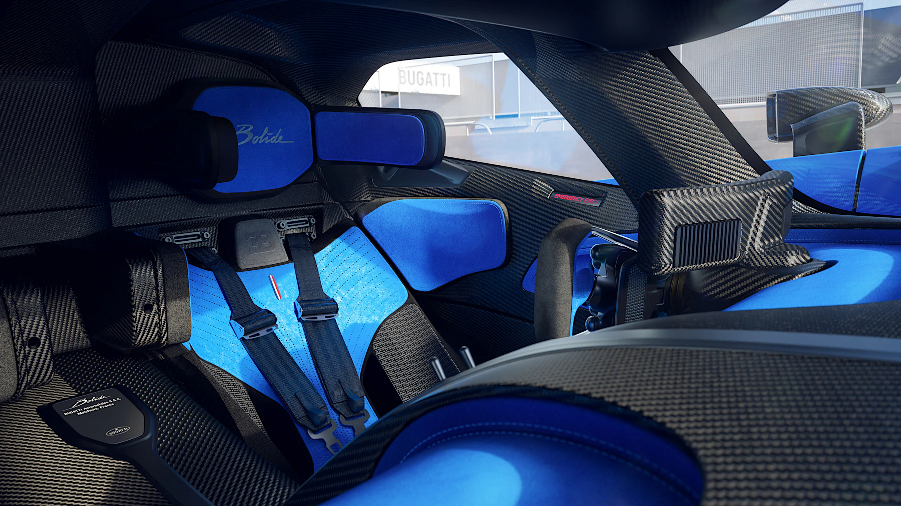
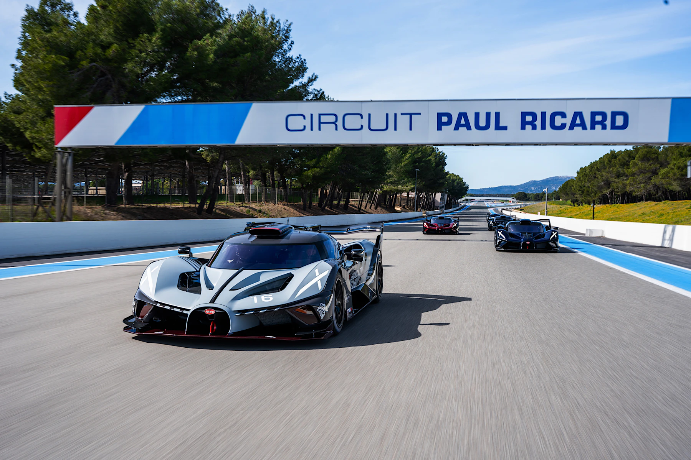
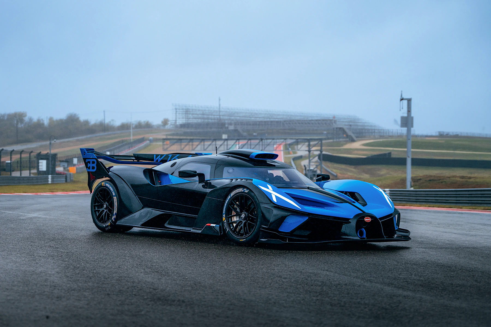

LE PUR SANG DES AUTOMOBILES ✕ TRACK ONLY
BOLIDE
为赛道而生的机器。W16 的最终形态，限量 40 台。
The Bugatti Bolide is real.2020 年 12 月 8 日——一段影片与一句话，宣告了一台没有先例的机器的存在。
火流星Le Météore
名字来自十九世纪法语——bolide：以极高速度穿越大气层、燃烧殆尽坠向地面的火流星。
从设计研究到可驾驶的原型车，历时不到一年。开发全程依托虚拟仿真验证极限载荷、加速与圈速，随后进入实体制造。
2020 年 12 月，照片与影片正式发布。它最初被定义为「一台可以驾驶的实验车」；2021 年 8 月，The Quail 汽车聚会上，布加迪宣布量产：限量 40 台，单价四百万欧元。
评审与奖项，来自同一种判断。
2021 年，巴黎国际汽车节专家评审团将其评为「全球最美超级跑车」；2022 年，Concorso d'Eleganza Villa d'Este 设计大奖。
结论一致：这台车的每一个表面都在工作——没有一条线为装饰而存在。

线上发布
一段影片 · 一行字以影片形式亮相，配以一句「The Bugatti Bolide is real」。随后登录赛车游戏 CSR Racing 2，供全球车迷先行体验。
量产决定
40 台 · 四百万欧元布加迪宣布量产为限量车型。40 台的产量，源于全球客户的预订需求。
交付开始
Molsheim 手工打造每一台均由 Molsheim 工匠手工完成，车漆与内饰与收藏级布加迪同一标准。区别在于：这台车仅限赛道使用。


形式追随性能Form Follows Performance
「Design and technology flow into one another.」——设计副总监 Frank Heyl
设计团队遵循一条原则：每一个技术决策，最终都呈现为可见的形态。
前分流器、气帘、涡流小翼、侧置中冷器——气动开发的每一项成果，都直接落在车身的造型上。三个签名，定义了它的面孔。
马蹄形格栅
115 年的布加迪 DNA，同时承担结构与气动功能。
X 签名
取自航空史 X-plane 意象：X 形尾灯框住中央排气管，贯穿前脸、座舱与座椅。
实体后视镜
放弃摄像头方案——实体镜让车手更快判断车距。


这些设计档案——气动解析、俯视布局、座舱构想——标注着每一处技术决策的落点。
Design and technology flow into one another in the Bolide. Every technical consideration has been translated directly into an aesthetic design.「在 Bolide 上，设计与技术彼此交融。每一个技术考量，都直接转化成了美学。」

前分流器
重刹时车头下沉，分流器贴近地面，下压力增加——前轴下压力被刻意设限，以维持制动时的气动平衡。

可调尾翼
尾翼按赛道特性设定，在下压力与阻力之间取得每一条赛道的平衡点——顶级赛车运动级别的气动开发流程。

气帘与涡流
前轮前的气帘引导气流绕车流动；分流器外缘小翼制造螺旋涡流，为扩散器供能。
W16，全力释放The W16, Unleashed
赛道化调校：把 W16 的一切参数重新计算一遍。
W16——二十年来布加迪公路车型的心脏——在 Bolide 上完成赛道化演进。
涡轮增压器与润滑系统按更高温度与载荷重新设计；进排气去除节流，响应更快。动力总成比 Chiron 前移 60 mm，为赛道配重优化布局。
单体壳按 FIA LMH/LMDh 规格开发，与 Le Mans 原型车同一强度标准，采用当时性能最高的新型碳纤维材料。安全是工程的一部分，而非附加项。
制造工艺：为没有先例的车，建立自己的标准。
3D 打印钛合金推杆重 100 克、传递 3.5 吨 力，精度 0.1 毫米；X 形支架重 300 克、承载超过 700 公斤。
每一台 Bolide 出厂前，均在 Mirecourt 赛道完成逐台检验——这是布加迪首次为无先例车型建立专属质检流程。
 悬停探索 ✕
悬停探索 ✕
与 F1 / LMh 赛车同级
LMP1 原型车同款架构
7,993 cc · 四涡轮
进排气去节流 · 新声浪
比 Chiron 前移 60 mm
与 Brembo 联手，制动系统达 F1 级
碳-碳 390 mm 制动盘与 LMh/LMDh、F1 赛车同级；前卡钳是 Brembo 为赛车安装过的最大型号，8 活塞配合专用冷却气道。
To pass these stringent but critical safety tests, we needed to ensure that everything about the monocoque was technically perfect.「要通过这些严苛的安全测试，单体壳的每一个细节都必须技术完美——在任何状态下都安全可靠。」



数字，赛道上的实证The Numbers, Measured on Track
发动机、车身与空气动力学到达极限后，留下的数字。
加速 — Acceleration
制动 — Braking
弯中，1,450 公斤的车身被近三吨下压力压在沥青上。前分流器随重刹贴近地面，下压力随速度与负载实时变化——这是它易于驾驭的原因：气动平衡在凶悍与可控之间完成调校。
车体 — General
动力 — Powertrain
底盘 — Chassis
制动 — Brakes

削减到只剩驾驶The Cockpit
座舱以 LMP1 原型车为蓝本：只保留驾驶所需的元素。
环绕式座舱中，仅保留方向盘、踏板、一块必要屏幕，以及驾驶者。
这是为驾驶而生的克制：每一处材料与缝线都服务于驾驶。进出座舱亦经专门设计——环抱式头枕外侧可翻折，便于入座。
方向盘
弯中手感经反复调校，停驶时如一件静置的雕塑。
座椅
X 主题多层结构，提供 2.5 G 侧向加速度下的支撑。
头枕
碰撞中的形变，按 FIA LMH/LMDh 标准验证。
3D 打印 X 形支架重 300 克，承载超过 700 公斤；FIA LMH/LMDh 安全标准，落实为座舱内每一处细节。



赛道，是它唯一的家
从纽博格林的高速测试，到迈阿密黎明的八台同场——这台车的一生，都在沥青上书写。
沥青上的一生Track Chronicle
从 Le Mans 的百年庆典，到车主们的第一次全油门——这是它留下的轨迹。
原型车进入下一阶段测试
两年半前，Bolide 还是 2020 年秋的一段线上影片。如今，原型车开始在真实赛道进行高强度开发测试——虚拟仿真完成之后，进入实体验证。
百年庆典上的公开动态首秀
勒芒 24 小时耐力赛百年庆典上，Bolide 完成首次公开动态亮相。驾驶者为勒芒冠军、布加迪试车手 Andy Wallace。
Goodwood 爬山赛首秀
古德伍德速度节：Bolide 完成爬山赛首秀，W16 的声浪首次完全释放。
Type 35 百年纪念版 × Laguna Seca
蒙特雷汽车周：百年纪念版 Bolide 与 Type 35 同场——距离 Type 35 首次参赛整整一个世纪。
「Feeling The Track」首发
首场车主赛道日于保罗·里卡德举行；同日发布 Équipe Pur Sang——以布加迪赛车基因涂装的专属 Bolide。
This was the moment we had all been working toward — witnessing multiple Bolide examples unleashed on the track together.「这是我们所有人一直等待的时刻——看着多台 Bolide 一起在赛道上释放。」

第一位车主，雨中的美洲赛道
美国车主将刚交付的 Bolide 驶上美洲赛道——作为给自己的圣诞礼物。雨战之后，他的评价：「它比承诺的还要容易驾驭，而全油门的感觉无可比拟。」


迈阿密：八台 Bolide 同场
迄今规模最大的 Bolide 车主聚会。清晨的迈阿密国际赛车场，八台 Bolide 于 F1 维修区前一字排开。活动提供专业教练与赛车级技术支持，为每位车主定制渐进式训练。

愿景，成为传奇A Vision Becomes Legacy
2025 年 11 月，末台 Bolide 于 Molsheim Atelier 完工。
终版采用法国赛车蓝与 Nocturne 黑碳纤维下装，由车主选定，致敬布加迪赛车历史。
至此，从 2020 年线上发布到最后一台交付，W16 的最终形态以 40 台限量收官。
Bolide 与 W16 Mistral 是最后搭载 W16 的布加迪车型。此后，这台服役二十年的发动机进入历史——以最纯粹、最不留余地的形态。
对车主而言，旅程才刚刚开始。
全球「认证 Bolide 中心」网络负责交付前检查、车辆整备与年度保养。
每年为车主举办的赛道体验——保罗·里卡德、迈阿密——正在成为新的传统。
40 台车，40 段不同的故事。共同点是同一个起点：2020 年，Molsheim。
We set out to create a car that can perform on the racetrack yet also belongs in the world's finest collections.「我们要创造一台既能在赛道上驰骋、又能进入世界顶级收藏的车。」

